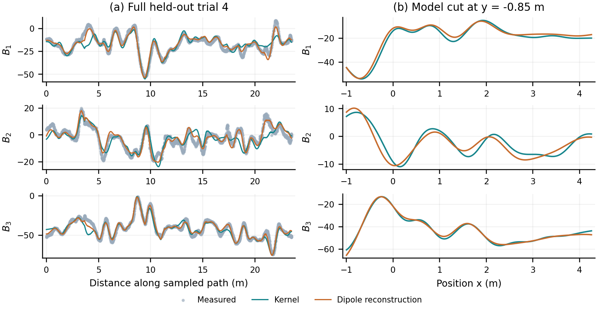

The hidden ideal-wire field
The steady straight-wire solution of Maxwell’s theory, from Ampère’s law and cylindrical symmetry.
Field notes on learning & physical law
First, observe.
A reading becomes a prediction. A prediction becomes an equation. When does an equation become a theory?
Three experiments in turning learned magnetic fields into explicit mathematics—and asking what survives the translation.
Follow the inquiryThe thread running through the work
A flexible predictor can tell us what comes next. We ask it for something more: an explicit function we can inspect, differentiate, interpret, and test beyond the observations that produced it.
The middle step changes across the experiments. The final judge remains prediction.
The controlled beginning
First note · A hidden synthetic profile
We begin in a world whose answer we know. The learner receives sampled field and source values, with no knowledge of the hidden tanh/sech² formula. Its Gaussian kernel learns the readings; a sparse equation search finds a differential relationship.
A curve is a beginning.
A relationship goes further.
Solving the selected equation recovers the original function family. In the noisy run, its field error is 0.045% on unseen positions. The tanh function was a consequence of the selected equation, not a regression feature.
The lesson A good fit and a recovered analytic form are separate achievements.
Read note I PDF · 3 pages ↗Out of the ideal world
Second note · Public magnetic measurements
Next, public Aalto recordings give us tracked positions and three magnetic channels. There is no known analytic function for the room. We fit a vector kernel, then reconstruct its predictions with a background field and equivalent magnetic dipoles.
D is the magnetic dipole response; q is an inferred contribution; b₀ is a uniform background.

Stable reference-sensor trials
Reference recording units
The magnetic family is supplied here; its equivalent source weights are learned. A direct-data dipole fit gives a similar error, 5.31. The sources are a useful representation, not identified objects in the room. These results reuse previously examined recordings and remain exploratory.
The lesson A physically structured function can improve prediction without uniquely explaining the sources.
Read note II PDF · 3 pages ↗Third note · Maxwell’s Perspective
What if the magnetic formula is withheld? In a simulated wire experiment, the kernel-to-function workflow searches general polynomial and rational expressions. The familiar shape comes back.
The hidden ideal-wire field
The steady straight-wire solution of Maxwell’s theory, from Ampère’s law and cylindrical symmetry.
The recovered analytic field
The first fixed run with 1% measurement noise. Coefficients shown rounded; scores use full precision.
x, y: position in metres · I: current in amperes · B: field in microtesla
The form returns.
The coefficients bear the journey.
Current proportionality and inverse-distance scaling emerge in all 15 fits. Circular symmetry is approximate. The experiment verifies inference in a deliberately constructed world; it does not independently validate Maxwell’s theory.
| The route taken | Field error |
|---|---|
| Observations → kernel | 20.44% |
| Observations → kernel → equation | 0.383% |
| Observations → equation directly | 0.056% |
Error is relative to clean vector-field RMS. The extracted equation also predicts unseen distances and currents. The tested kernel search is not an established optimum.
The useful surprise: direct equation fitting does better. The kernel can be a bridge to mathematics, but this experiment gives us no reason to make that bridge compulsory.
Read note III PDF · 4 pages ↗The question underneath the equations
The world stays the same. Change what the learner can observe, and the function it can infer may change.
Suppose the same wire carries equal and opposite currents with equal probability, independently of position. What does a learner see?
An implication of the setup, not an additional fitted result.
The current tells the learner which direction and strength to predict. A single analytic function can express that dependence.
Zero is the optimal squared-error mean predictor with these incomplete inputs. Individual fields remain nonzero; their variation cannot be resolved from position alone.
Neither an analytic expression nor a learned predictor becomes more real through its notation. Each makes a claim about observations, under conditions. Its empirical reach is something to establish.
They can converge in predictive content when they target the same calibrated quantity, include the relevant conditions, observe enough to distinguish candidate fields, and use estimators capable of recovering that target.
Different mathematical forms may describe the same field. Limited or noisy observations can also leave genuinely different functions indistinguishable on the tested domain. Our small wire experiment establishes close recovery within its search grammar, not a convergence theorem.
The next test is to change the experiment: move a source, observe another direction, resolve a finer scale, or introduce time dependence. Which relationships survive?
From readings to relationships.
The inquiry continues.
From relationships to new tests.
The complete inquiry
A magnetic-like kernel benchmark
Hidden samples → differential equation → recovered tanh/sech² functions.Real-data reconstruction with equivalent dipoles
Public measurements → learned field → theoretical source representation.Observations, learned kernels and the analytic functions we infer
A hidden wire, two mathematical routes, and the role of the observer.